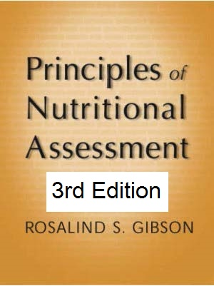
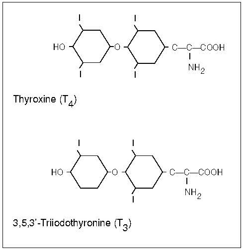
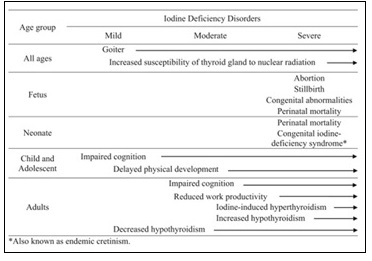
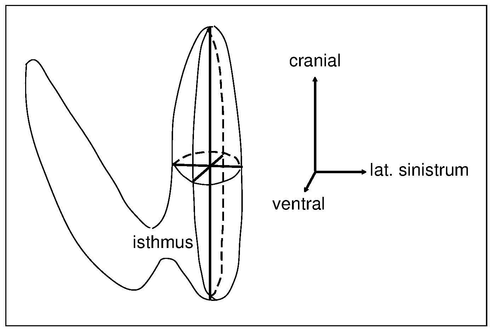
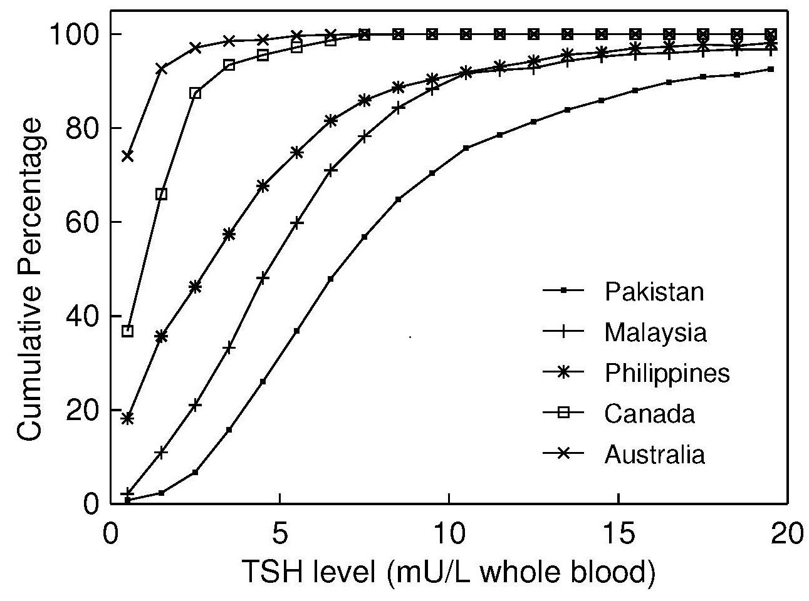

3rd Edition April, 2026
Abstract
CITE AS: Skeaff S. and Gibson. R. S. Principles of Nutritional Assessment: Iodine https://nutritionalassessment.org/iodine/

| Grade | Clinical signs |
|---|---|
| Grade 0 | No palpable or visible goiter |
| Grade 1 | A mass in the neck that is consistent with an enlarged thyroid that is pal- pablebut not visible when the neck is in a normal position. It moves upward in the neck when the subject swallows. Nodular alteration(s) can occur even when the thyroid is not visibly enlarged. |
| Grade 2 | A swelling in the neck that is visible when the neck is in a normal position and is consistent with an enlarged thyroid when the neck is palpated. |
| Severity of IDD | Prevalence of goitre (TGR (%)) |
|---|---|
| Mild | 5.0 - 19.9 |
| Moderate | 20-29.9 |
| Severe | ≥30 |
| Boys Med. (p97) | Girls Med. (p97) | |
|---|---|---|
| Age (years) | ||
| 6 | 1.60 (2.91) | 1.57 (2.84) |
| 7 | 1.80 (3.29) | 1.81 (3.26) |
| 8 | 2.03 (3.71) | 2.08 (3.76) |
| 9 | 2.30 (4.19) | 2.40 (4.32) |
| 10 | 2.59 (4.73) | 2.76 (4.98) |
| 11 | 2.92 (5.34) | 3.17 {5.73) |
| 12 | 3.30 (6.03) | 3.65 {6.59) |
| BSA (m2) | ||
| 0.7 | 1.47 (2.62) | 1.46 (2.56) |
| 0.8 | 1.66 (2.95) | 1.67 (2.91) |
| 0.9 | 1.86 (3.32) | 1.90 (3.32) |
| 1.0 | 2.10 (3.73) | 2.17 (3.79) |
| 1.1 | 2.36 (4.20) | 2.47 (4.32) |
| 1.2 | 2.65 (4.73) | 2.82 (4.92) |
| 1.3 | 2.99 (5.32) | 3.21 (5.61) |
| 1.4 | 3.36 (5.98) | 3.66 (6.40) |
| 1.5 | 3.78 (6.73) | 4.17 (7.29) |
| 1.6 | 4.25 (7.57) | 4.76 (8.32) |

| Iodine nutrition | School-age children | Adults | Pregnant women |
|---|---|---|---|
| Severe iodine deficiency | <20µg/L | Not defined | Not defined |
| Moderate iodine deficiency | 20-49µg/L | Not defined | Not defined |
| Mild iodine deficiency | 50-99µg/L | <100µg/L | <150µg/L |
| Adequate / Optimum | 100-299µg/L | ≥100µg/L | 150-249µg/L |
| Excessive, with risk of adverse consequences | ≥300µg/L | Not defined | ≥500µg/L |

| Specimen (n) | Median TSH (mU/L) | % with TSH >5mU/L (95%CI) |
|---|---|---|
| Cord blood (243) | 8.3 | 82.3 (77.1, 86.7) |
| Heel blood day 1 (14) | 8.5 | 85.7 (60.3, 97.5) |
| Heel blood day 2 (48) | 7.5 | 79.2 (66.0, 88.9) |
| Heel blood day 3a (28) | 4.7 | 42.9 (25.7, 61.4) |